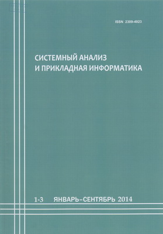

Главные направления
Научно-исследовательская работа
Подробнее о научно-исследовательской работе кафедр можно узнать перейдя по ссылкам:
Конференции
Международные научно-технические интернет конференции
- VIII Международная научно-техническая интернет конференция "Информационные технологии в образовании, науке и производстве"
- VII Международная научно-техническая интернет конференция "Информационные технологии в образовании, науке и производстве"
- VI Международная научно-техническая интернет конференция "Информационные технологии в образовании, науке и производстве"
- V Международная научно-техническая интернет конференция "Информационные технологии в образовании, науке и производстве"
- IV Международная научно-техническая интернет конференция "Информационные технологии в образовании, науке и производстве"
- III Международная научно-техническая интернет конференция "Информационные технологии в образовании, науке и производстве"
- II Международная научно-техническая интернет конференция "Информационные технологии в образовании, науке и производстве"
Журнал
Научно-технический рецензируемый журнал "Системный анализ и прикладная информатика"
В научно-техническом журнале «Системный анализ и прикладная информатика» публикуются статьи по актуальным вопросам теории и практики анализа и синтеза технических и информационных систем.
Основные рубрики журнала:
- Системный анализ;
- Управление техническими объектами;
- Обработка информации и принятие решений;
- Информационные технологии;
- Защита информации;
- Информационные технологии в образовании;
- Роботы, мехатроника и робототехнические системы.
Все статьи проходят научное рецензирование.
Периодичность выхода журнала «Системный анализ и прикладная информатика» 1 раз в 3 месяца.
Адрес редакции:
Республика Беларусь, г. Минск, 220114, ул. Франциска Скорины 25/3.
Телефон:
E-mail:
Ссылка:
